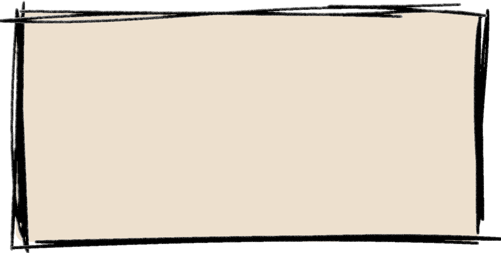

- Oysters change their gender!
- An oyster can filter 1.3 gallons of water per hour.
- Oysters are shaped by their beds.
- Pearls don’t only come from oysters, if they do they are often non-edible.
- Oyster shells are recyclable, and they are often used to grow young oysters.
- Oysters feed by extracting algae and other food particles from the water they are drawing over their gills.
- Really senstive to water quality and susceptible to coastal pollution.
- Their flesh can reatin toxins from their environment, which makes them to be no longer edible.
Go BaCk!